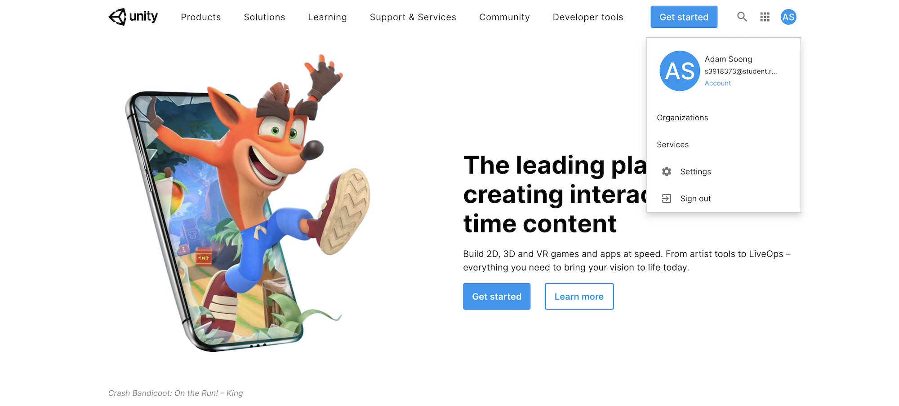
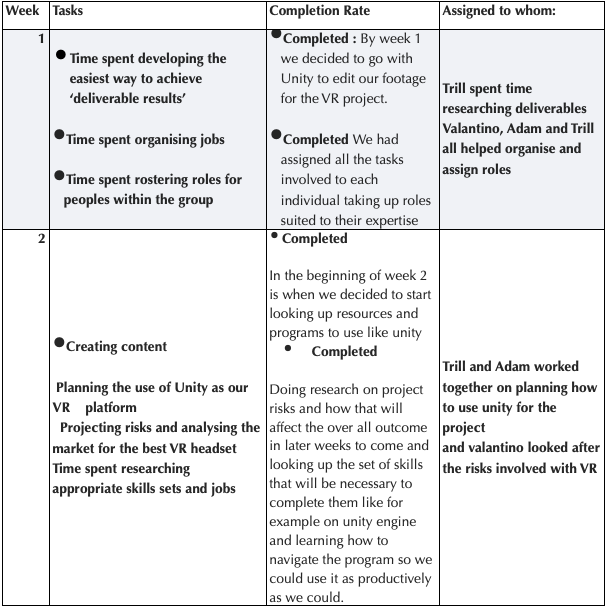
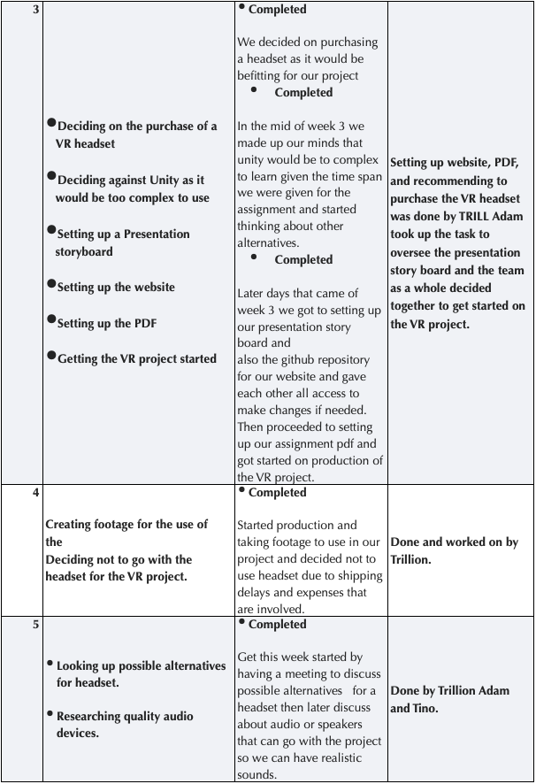
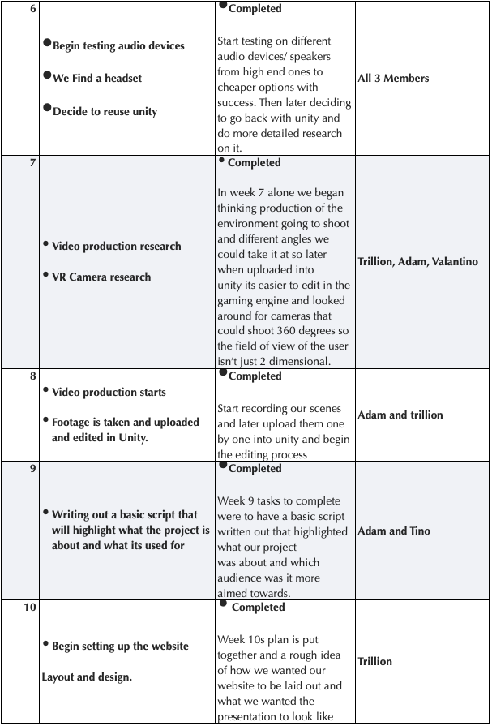
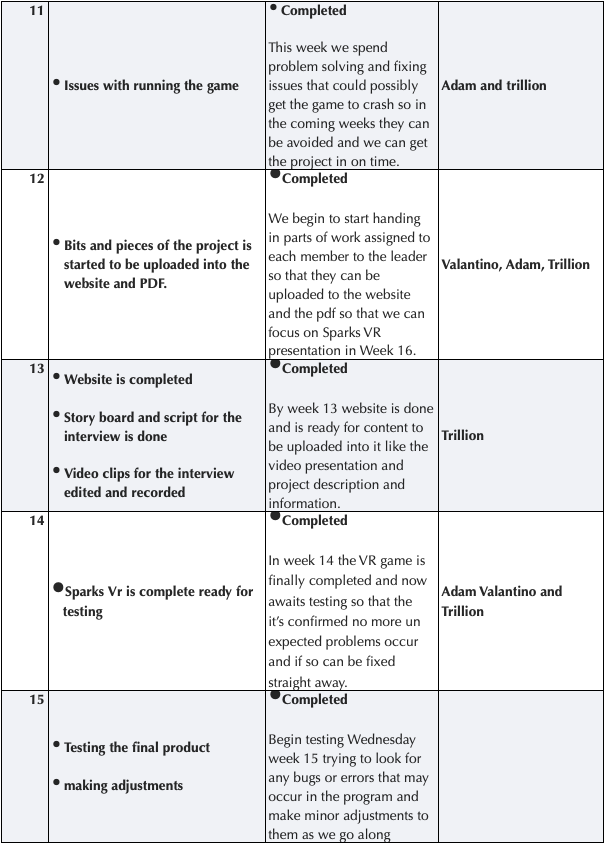

Overview
Topic
An overview of what you propose to do in your project. Concentrate on the big picture and outcomes, rather than intricate details. At least two paragraphs is expected.
SparksVR is a program that is designed to help students learn without being ‘on the site’. It is designed to help those from Years 10-12, TAFE students and those interested in an Electrical Apprenticeship. In a field which may a lot of work with powerlines or power stations, electrical appliances and even unsafe connections or outlets, it is incredibly important that these learners begin to approach learning about these situations in a safe environment. These are going to be the future electricians, tradespeople and electrical engineers so it is important that learning is safe and even when replicating a potentially dangerous situation.
This project focuses on a VR course, and the aim is that our students can take this course at home by logging into their paid account through their course provider (who would be government accredited and TAFE certified) and with their VR headset be able to be immersed in the ‘VR classroom’ where an instructor can point out situations, guide them through different potentially fatal situations, and even do case studying analysis on past fata situations. This would revolutionise the way students are taught because they could fully engage with a dangerous situation without feeling the full effects of their inexperience, or mistakes. The course would use VR headset and VR gloves to prepare students to feel some of the same things that an electrician would; for instance, feeling the cables in their hands as they prepared them for soldering, feeling a soft ‘buzz’ to inform them they would have suffered a dangerous electrical contact.
The course would go through several different scenes and be broken down into several different areas so that our students could work through the basics of electrical engineering or trades work (re-wiring, soldering, diagnosing electrical problems, fixing circuits, installing appliances, maintaining networks, etc) and learn about the different spaces some of these things are done (industrial settings, government buildings, homes, retail places etc). By the end of the VR course a student would have worked in multiple settings of an electrical engineer/tradesperson and walk away with a Certificate accrediting them to start their Apprenticeship or Electrical Engineering degree.
This course would get students into a classroom without having to leave their homes, so would make the lives of those people studying easier as they completed their accreditation. Because the course would be through VR they would feel as though they were ‘actually there’ - be that at the workplace, the house where they were installing an oven, etc. It would empower and excite so many future learners.
Motivation
What are your motivations for your project. Why is this project important or interesting? How does it fit in with current IT trends? What would it show to a future employer if you were able to work on this project? At least one paragraph is expected.
Motivation What are your motivations for your project. Why is this project important or interesting? How does it fit in with current IT trends? What would it show to a future employer if you were able to work on this project? At least one paragraph is expected.
There is more than one motivation behind this project, but broadly the purpose of this project is to minimise accidents and serious injuries in the process of learning the skills involved with becoming an electrical engineer or tradesperson. Almost all group members have friends or family that work in the electrical engineering trade, so all have experienced first-hand the consequences when something goes wrong during training – or even in the field those first few times. All of us have a friend or family member who has had a bad electric shock. The motivation behind this project is to prevent accidents from occurring with the frequency with which they do now – and even prevent them from occurring during the training process.
It was revealed (Australian Institute of Health and Welfare and Flinders University, 2018) that around half the deaths for the period 2015-2016 this period was by paid workers, an alarming statistic for many in the trade. The deaths were often preventable so could have been minimised with better training.
Better training could be the result of an educational program that not only provides up-to-date knowledge but does so in a way that is entirely engaging and compelling. It has been known for a while that people learn best by doing (N, Babich, 2018) but it matters that this can be done safely in a highly specialised and sometimes dangerous areas as the electrical trade. If something goes wrong, there is no re-wind button on death, and some serious injuries.
The project uses VR technology as a tool that provides an immersive experience that transports the user to the site of the work, whether that be in a field reconstructing power lines or in a house checking an appliance, without ever risking their own personal safety whilst learning.
This project is interesting because it would directly impact the education of the students who partook in its training. VR education (N, Babich, 2018) around the world is changing the way students are learning and immersive nature means that many times can feel like the real thing, only with no consequences for not properly following a procedure or forgetting a certain step in a real class – or worse, in real life.
It fits in incredibly well with the current IT trends, in which we are seeing an increasing interest in the use of VR technology, capability and expansion. Statistics (Petrov, C, 2021) point out that by the end of 2021 VR consumer virtual and software is going to reach approximately $3.7 billion – whereas by 2024 this is expected to grow to $72.8 billion. There are a number of other statistics that point to the general adoption and acceptance of the use of VR and or AR, with standalone VR headsets (headsets designed to be used without connection to a laptop of desk computer) sales approximately zero in 2017 and are expected to be as high as 29 million in 2022 (Petrov, C, 2021).
This project would show a potential employee we can work as a team productively and practise the following skill sets:
- Good team working skills
- Motivation
- Excellent research skills
- Great ideas formulation and drive
- Problem solving and planning
Landscape
What similar systems or products are available? What competitors are there? What points of difference are there about your project compared to what exist now? At least one paragraph is expected.
There are similar systems and products available, as VR and Augmented reality are already used in a lot of classrooms around the world, because of the benefits it provides students. There are students in UK, Australia and New Zealand who have benefited from this education. It has been shown that VR helps engage students and inspire students and keeps them learning longer (Immersion VR, 2020). Fully immersed in a world, students are more interested in the materials being presented, and it can save either the schools or parents money and time to implement these experiences (Immersion VR, n.d). It is beneficial to the learning process as the student can see what the actual steps of a procedure might be, and then practise in an interactive VR environment. By getting feedback from their actions in this VR landscape they can learn as though they were actually there in the workplace (ClassVR, 2020).
There are currently competitors out there in the global and national markets suing VR as a means for educational purposes. Both augmented and Virtual reality is currently being used in courses to provide worked in vocational training the safety of practising again and again without fear of expense or danger. One system ClassVR currently offers Virtual and Augmented reality courses (throughout the world) which allow students to learn through this manner (ClassVR, 2020) for their medical and trade courses. And there are other companies who have currently developed either headsets or immersive classroom tools (Smith, S, 2021). A few others are Immersive VR in England offering VR headsets and 3D classroom experiences for primary and high school students, mostly for the use of life like trips to different countries, and even in Czech Republic and China, students are learning medicine with the help of VR (Smith, S, 2021). Many of these have used headsets and hand controllers.
There even been VR projects in Australia, and one notable case happened in NSW in two government funded schools. “It became the first research internationally to embed high-end VR in school classrooms.” (Southgate, E, 2020). As impressive as this is it did shine light on to the possibilities of what would need to be improved for future students to be able to access this equipment easily and through other course providers.
This is how our course will be different. It hopes to be the first VR course that is approved by TAFE for use in the educational industry for the training of the country’s future electricians.
Detailed Description
Aims
The topic description gives a general overview. However, it is usually helpful to have a specific aim for your project, as well as some smaller goals which will be helpful for achieving your aim. Describe these as best you can. Each project should have a single aim. What are the most important parts of the project? Which parts should have priority over the others? If we have only enough time or resources for one of our goals, which one should it be?.
The aim of 'Sparks VR’ is to develop an educational tool for students interested in a career as an Electrician. It is important that the program educates these students in not only what an Electrician does, but also the skills and knowledge that are necessary to be successful. The target audience is Year 10-12 High School students, TAFE students and those interested in an Electrical Apprenticeship. The tasks will be designed in conjunction with industry professionals and consider government standards. The satisfactory completion of the program will result in a ‘Certificate of Completion’ that can be used by future employers to determine that the candidate has a basic knowledge of what is involved in the profession, and a basic awareness of the necessary skills and safety issues.
Goal 1: Inform and educate the user about the role of the Electrician and what skills are involved. General electricians are employed in a wide range of areas - they ‘install, test, connect, commission, maintain and modify electrical equipment, wiring and control systems’ (joboutlook.gov.au, 2021). The trade is expected to have a strong future growth, and that combined with its level of pay, makes it appealing to job seekers. ‘SparksVR’ provides the perfect platform to inform students about the range of job opportunities that are available to electricians. Tasks can be developed to incorporate areas that are not usually identified without prior knowledge. This not only provides knowledge but increases a student's likelihood of following it as a career.
Goal 2: Give the user ‘virtual’ real world experience in what it’s like to work as an Electrician. This includes participation in a range of ‘virtual’ tasks involving basic practical skills. As with many trades, electricians are required to not only have a strong knowledge base, but also perform a range of skills and activities that are physically and mentally challenging. These include handling, positioning, and moving objects, lifting, climbing, balancing, attention to detail, identifying different colours, planning and problem-solving (joboutlook.gov.au, 2021). Each of these skills translates well to virtual reality tasks. This program can provide these practical skills in a way that students can have fun and enjoy while learning.
Goal 3: Allow the user to identify the safety issues faced by Electricians and understand the importance of following safety guidelines. It is well documented that working as an electrician is high risk, and it is important that they can combine their knowledge and skills with the ability to identify risks and adapt quickly to help minimise accidents and injury (Hernandez et al., 2016, p. 116). ‘SparksVR’ provides an ideal learning situation to help students identify these risks and see how they react when things going wrong. The program can simulate real situations and let the student discover what happens when different options are taken.
Each of these goals are important and work together to make sure ‘SparksVR’ will achieve its aim. However, if time or resources are limited, there is scope to combine goals because of the overlap between skills and knowledge.
Plans and Progress
Here you should give as much detail as you can about what your project will do, and how you will do it. This should also include how far you have got with developing any features or outcomes from your project. Tell us about the “story" of your project – how it began, how it has progressed, and what stage of the plan you are up to. Include any dead-ends you may have followed, decisions made, and changes that have been made to the project plan. This will need to include a significant amount of detail, so that it is easily seen what precisely you have done and are planning to do. If it helps, imagine the information that would be required if you were to hand this project over at the end of the semester to a new team to complete the job. What would you want to know, if you were one of the people taking over? There is no set length for this section, but it is hard to believe that less than two pages could be adequate. Three or four pages is far more likely.
Week 1
In the first week of meeting 4 of our members were active as 3 were left out so we sent out emails to them and containing the email was a link to Microsoft teams encouraging the rest of our members to join so we can get as much work as we can into the project and all rounds be as productive as we can.
Once the emails were sent out, folders were uploaded to provide the framework for the group to begin working on the Assignment and see where our strengths and weaknesses lie.
Our project was decided, and we will be working on a Project to use VR in a training program to show a student how to safely follow procedures. Electrical engineering is a dangerous field and the more the learning environment can be controlled the better the outcomes for the students.
There is only so little that reading about techniques will accomplish – to be become proficient you really need to practise it in the field.
Finalising meeting - During the finalisation of the meeting we would discuss certain sections of the assessment and in our evaluation of the team and our specific set of skills we assigned each other a specific task to work on during the week so come our next meeting we can focus more on our project.
Finalising group work for last assignment- To decide on who would be taking on what part of the assignment we looked through assignment 2 and our reviews to see what parts we could have improved on in that assignment and in turn we could look at this assessment and pick out parts we can focus on more so we can get the best out of the task.
Decided to go ahead with the V.R project- After we had established which parts of the assessment, we all would be doing all that was left was to go ahead with the project and we all agreed that Spark V.R simulator suited all the specification for the assignment.
Week 2
Work begins on fleshing out the Project and some documents are written. Contact between group members begins as some are using Facebook Messenger and others using Outlook and SharePoint. We are now in Week 9 of our Unit. We must create a GitHub account for our project, but work has been fleshed out on the Jobs & Skills section, project ideas etc.
Contact includes emails between members and an attempt is made to set up a meeting next week.
Talking about project- We talked about the project and in what order we would do it in and things like certain problems and errors we could possibly run into and noted them down as to avoid as much setbacks as we can.
Some work is started- Once the team had become acquainted and discussed our hobbies and things, we like to do in our spare time we agreed it was time to begin the assignment and in its initial stages we found that it a bit easier to get started as we set up our game plan and went off that from week 1 meetings.
Group meets in mail for first time- We exchanged emails so that we can stay connected with each other to avoid confusion and if a member were not sure of what he was doing he could just send an email and to any of us and let us know how we could so we can help in any way possible.
Week 3
In the beginning of week 3 we came together and decided to not buy the VR goggles as they would not have arrived on time due to the shipping taking longer than anticipated so what we did in the meantime while one of our members did more research on the headsets the rest of us decided it was time to begin production and start shooting clips and scenes for the project so that later we can upload them into a cross platform game engine called Unity. Now while we have a member working on researching VR goggle alternatives and another on the Shooting scenes for the game, we tasked 1 more on building and coding a website on Github and constantly communicating back and forth with the team on the specification and design of the Website.
The meeting that was held on the Saturday spanned 50 minutes of talking about how far in the assignment we have come and what we were having trouble with and trying our best to plan in advance as best as we could so that if any member had too much on their plate, we could lend a hand and through this process we can feel at ease knowing we can still get everything done in time.
Group first met on Wednesday meeting- group got together for the Wednesday meeting and started by discussing some possible ideas we could come up with to make some minor changes to the project or use such as tools or programs we are planning to use.
Complications in shipping meant that we had to rethink our project deliverables. We came to a conclusion not to buy the VR goggles because shipping would have been an issue for the time it would have taken them to arrive by then we would have exceeded the due date and potentially could have lost marks because of that.
Decided when to meet for future meetings - So we started making plans and checking each other’s schedules to see which times during the week would it be best to run our next couple of meetings so we can talk about other issues we may run into while working on the project and how best to address them.
Decided to record videos towards project for VR educational purposes- Started shooting clips/videos for the VR program based on educating tradesmen and women so they acquire the necessary skills to perform in the workplace safely and correctly this task was given to Trillion so she can capture footage we can later upload onto unity and edit it so it looks like a simulation and that what your experiencing is realistic.
Jobs are assigned for the persons to do for the next week and should mostly be done by the Saturday? Luke is assigned does website- New tasks are assigned to everyone on top of their previous ones so they have extra things to work on an example is Luke is tasked with doing the website on GitHub and managing all the code and customising it but also gives access to all the other members so they can see what changes he makes to it daily and if he needs help or advice on what extra changes he should make consistently receiving feedback from other members.
Week 4
Building the website. On the Monday of week 4, we began the base for our website where will be presenting the project on Trillion white set up the repository on GitHub and made sure that all the members had access to it so that just in case we needed to make changes it can be done easily and efficiently.
We also getting the PDF file ready - Trillion also took the initiative of getting the pdf file set up so we can upload contents of the assignment one by one as they start to draw near their completion and due date.
Adam and Valantino have nearly completed their respective sections. Adam and Valantino start nearing the completion of their first couple of tasks assigned to them in the beginning of that week for Adam it was tools and technology and Valantino it was some risks the project could run into during its production.
Decided that Luke wasn’t going to play a prominent role so allocation will begin on Wednesday. Because Luke didn’t show up to the meetings leading up to the week 4 we decided to take the roles we given to him at the start of week 1 and distributed them equally amongst each other so that the project doesn’t get handed late or the sections don’t get done in general.
Researching extensively Unity and deciding how to incorporate that into our project with our videos - looking up more information to do with VR so we can learn which tools and programs works best and the ones that don’t so that we can later incorporate these into our project and hopefully have success in completing the project.
Roles
Project leader/ManagerThe role of the project leader/Manager is the one that is leading the team in the project and does things such as motivating the team members so that the project is done with maximum capacity and effort and that everyone can give it their best shot second is making sure that the project in its completion to go through and see if there was anything missed or small details that changes could be made to and third keeping the team engaged focused so that the project can reach its goal later in its finalization lastly testing the project and products that go through making the project, The project manager role is similar but has its differences such as managing and resolving issues as they arise and identifying potential risks and creating plans if they occur, delivering updates on the progress and possible obstacles facing a project for example if one member of the team made some changes the manager in later meetings can bring it to the attention of the rest of the team so that they know which direction the project is leaning towards and finally keeping the team organized as so that things run smoothly.
Team member
A project Team member in our project which does not consist of 1 specific role but they contribute in all aspects of the project like helping with identifying risks and problems with the project and coming up with solutions to counteract them, or help with things such as development of the website and commenting and giving suggestions on things that can be implemented so that the website comes out looking at its best, documenting the process in which the project was done like necessary steps that were taken so that the end goal was of the project was reached, completing individual tasks that might have been assigned to him/her by the project manager and completing them by the due date and finally providing expertise in aspects of the project they might have more experience in or giving recommendation’s on certain products and programs they have used in the past and worked or have failed.
Web developer’s
The role of the web developers is to oversee everything that goes into development of the website. They look after scheduling when the project will start and by what date it is to be completed by front-end developers work with the layouts provided to them by UI designers and transform static interface images into a fully functional web app client-side. Their skills include programming in HTML5, CSS, JavaScript and work with front-end libraries and frameworks (Bootstrap, Foundation, Semantic UI, Angular, React JS, etc. Back-end developers are responsible for creating the server side of a web app and are proficient in either PHP, Python, Java, .NET, or Ruby on Rails, as well as in the tools and web app frameworks based on them. In any web development team, the main task of these developers is to ensure that the back end handles the data it receives and sends back to the front end in a correct, secure, and stable way.
Testing Specialist
The duties of the testing specialist is to test the final product and give feedback to the developers of things they should consider making changes to in the project so that later it makes an overall improvement and gets received well by customers, they are to also review the contents of the website and speak with its developers if they run into any bugs or issues so that its fixed early on and not left till last minute once the project is finalized.
Scope and Limits
The scope is probably the most crucial part of your plan, and also the most difficult to define. One way to define the scope is to think of the deliverables for your project, i.e. what outcomes would you be able to show to someone who asks you to see the results of your work. This will also include several statements about what will not be part of the project. For example, if you are using Open Street Maps to show the location of all your favourite shops, the deliverables would include the updated map, but not the Open Street Maps technology itself. It would also not include many other features of Open Street Maps, or other interesting location -- just those which show your favourite shops. The ‘SparksVR’ program is being developed to give educators an interactive tool to teach safety awareness and basic skills for students thinking of becoming an Electrician. The scope of this project group is to outline all aspects of the program necessary for its successful development. Deliverables for the project will include:
- Document Reviewing Current Research discussing VR educational programs
- Evidence of Liaison with Industry Professionals and Educators
- Focus groups
- Interviews
- Surveys
- Evidence of a detailed strategy to develop the program
- Project Timeline
- Tools and Technologies (hardware and software)
- Development of Prototype
- Preliminary Testing
- Troubleshooting and Areas for Future Development
- Identifying limitations and constraints
- Lack of experience with software / coding
The main constraints of the project are time and funding. The project is only five weeks, and the group has only three team members, so the amount of work that can be achieved is limited. Each member of the group has other work and study commitments, so it is difficult to arrange meetings and balance work for the project. It is also hard because the team members have limited experience using the tools required to develop the program. It is also unrealistic to have a fully developed program in a five-week timeframe, especially when experience using the software is limited. This is reflected in our decision to develop a prototype or ‘mock-up’ of the program, rather than create the actual program using Unity.
While this is the current scope of the project, it is important to regularly review the deliverables to avoid scope creep (unexpected changes that occur after the project has started) (Alexander, 2021). In the long term there is scope for the program to be extended to other trades, but it is important to focus solely on electricians in this project. It is also important to look closely at the skills that should be covered, and the number of tasks in the program. These need to be quantified so that there is a limit. It might be more realistic to divide the tasks into groups / levels, with this project providing one or two samples in each group.
Tools and Technologies
What software or other tools are required by the project? Are there any software licenses needed? Is there any hardware needed (beyond a standard laptop or something similar)? This needs to be precise (e.g., Windows Movie Maker Version 45.3) but needn't be long. You should also include a brief description of any prior experience any group members have had with the tools and technologies you list. There is no minimum length for this. It is important to be as precise as possible, but descriptions of the tools are not needed here.
The tools used in the project were chosen for a variety of reasons, including quality, price, reliability, familiarity and ease of use. Most of the work can be performed on a standard laptop or computer, and for the purposes of initial project the program is developed for Mac and iOS.
The software of choice for the project is Unity, a program used to create Virtual Reality solutions across many areas, especially gaming development. Unity provides tools for editing, design, computer aided design (CAD) and collaboration. The program can be purchased outright and there is no need for a separate software license. For projects such as this, the Unity Plus plan would also provide Advanced Cloud Diagnostics and Core Analytics (Unity.com, 2021). Similar projects have found Unity successful because it is easy to install, debug and configure, it is simple to learn, and it provides perfect documentation (Yao, 2019, p.5). Group members do not have any experience in with this program, but it was chosen because of its functions and the fact is easy to use. In the short-term (for this project), the team will use CenarioVR to provide a ‘mock-up’ of the program. This choice was made because no coding is necessary to make this ‘mock-up’.
A comparison was made between two coding programs for the project – C# and C++. Both are suitable for use with VR technology, although over 90% of VR/AV development companies use C# (Circuitstream.com.au, 2020). This is because it is easier to work with and Unity software can check the code automatically and identify errors. The members of the group have some experience in using C#.
To record the project, it was decided that a ‘Go Pro Max’ was the most appropriate camera to use. This was because of both its video and audio features. The main advantages were its 360° range and its smooth performance. Its audio is also a high quality and reduce wind-noise. The 360 rotation gives a perspective that is natural and helps with storytelling (Schutze & Irwin-Schutze, 2018, p.280-282). This is important to make sure that the tasks are clear and realistic.
The choice of headset is important to enhance the experience. Barack & Korolov (2020) suggested that to have an immersive experience, you need a large space to be able to move freely in the room. The group compared two types of headsets that they reviewed – the ‘Oculus Quest’ and the ‘Vive Cosmos’. The ‘Oculus Quest’ works with iOS and doesn’t require a computer connection. It uses two hand controllers and has built-in 3D positional audio (Oculus.com, 2021). The ‘Vive Cosmos’ requires a computer to work, but it also has sensitive hand controllers and is a very robust system. It has been used with many educational programs. They were described as the ‘most immersive’, but although they are incredibly life-life, you will still need a computer to plug into (Barack & Korolov, 2020). Out of these two headsets, the ‘Oculus Quest’ is the group’s choice because the lack of cables and its freedom to move. Although the ‘Oculus Quest’ were the most appealing currently, for future development it was decided to further investigate the use of gloves instead of controllers for the ultimate sense of touch.
Testing
How will your test your project? How will you know when you have succeeded? Testing is not something that you should leave until the very end; often it is far more useful to have a quick and dirty “mockup" of a project and then do some (limited) testing, to and out whether you are building the right product. If your project involves user testing, you should describe in your plan how you will find the test users, approximately what number of people you will need, and what background (if any) is required. At least one paragraph is expected here.
To ensure the success of ‘SparksVR’ it is important to test the functional and non-functional elements of the program throughout the entire process. The program is predominantly educational, aimed at a student population. This means that separate to the technical aspects, content is also important. The project team has a range of Industry Professionals and Educators giving advice. This same group will be used to provide internal testing of the prototype.
Focus groups have been identified as a quick and cost-effective method of getting qualitative feedback (Kontio, Lehtola & Bragge, 2004). The team will use focus groups to gather feedback from both educators and potential students. These groups can be used to look at the content of questions and tasks, and then later to look at how students react to the tasks, what works and what needs to be changed. Student groups will have 8-10 people, so it should be easy to use classroom groups. The number of educators will be less because of location and overall numbers.
Even though Unity is our preferred software, the team is not using it to test the project at this stage because none of the project team have enough knowledge or experience using that coding platform, and the five-week time frame is too short to set it up. Adam however still got an account set up:

Instead, the team decided that the main method of testing is to provide a ‘mock-up’ using CenarioVR. Mock-up tools have often been used in program design as a draft to test design ideas and streamline decisions before committing to them in the actual program (Peavey, Zoss & Watkins, 2012, p.133). It will also show the program’s potential to the key stakeholders (Educators, Industry Professionals, Investors) and provides input into what works and what needs to be changed.CenerioVR is useful for the project because, unlike Unity, it doesn’t rely on coding (CenerioVR.com, 2021) so it provides a quick and easy way to see if the program’s environment is workable.
MAIN METHOD OF TESTING: get an account in CenarioVR, upload the photo, turn it into a vr environment and add comments to areas which require extra communication

To upload the environment to CenarioVR, it is necessary to have a 360° photo. The required equipment / software to do this was not available to the team, so we were unable to provide an accurate snapshot of the project. Figure 1 and Figure 2 (below) are examples of possible scenarios for students. Figure 1 demonstrates the precision and skill necessary to complete work such as soldering, while figure 2 shows a household power board, demonstrating the need for real-life safety knowledge.

TimeFrame
This means that your plan will be for a total of 15 weeks, with the first 6 being on this assignment. You will clearly not have the extra 10 weeks to work on the project; this is intended to give you a feeling for how much you would be able to achieve in that time. This means that the first 6 weeks of your timeline will end up being your actual progress on this project, with the remaining 10 weeks being your plan for the next stages. This should be presented in the form of a table, with one row for each week, specifying as best you can the work for each person for each week. This means that the first six rows of the table will describe your progress so far, and the remaining 10 your best guess at how the remaining time would work. This will no doubt change as you work on your assignment, as it will give you a more precise idea about how long it will take to get things done. This is not an unchangeable contract for exactly how things will work; that is unrealistic for just about any project.





Risks
What risks can you identify for your project? There will always be some generic risks (such as computers breaking down the night before a deadline, health and family issues, and institutional changes). Do not include generic risks such as these. The idea is to be as specific as you can to your project. For example, if your topic is to develop a game, there may be a risk that the software you choose to work with may be very difficult to learn, poorly documented, or not turn out to have the features that it claims it has. These properties are often only discovered once you have started working with the software, and so unless you have had lots of experience with the particular tool, there is always a risk that it may not work as well as you believe it should, no matter how much prior research you do. Similar comments apply to hardware.
Despite our project having many positive effects and outcomes when it comes to training individuals and giving them the experience necessary to be competent in the workplace VR can also have some risks involved. Cheryl Roy a lawyer highlights these risks in her article The Harmful Effects of VR and in this she goes on to explain some of the side effects one can experience from consistently being immersed in virtual reality.
- Damaged Vision- Being one of the most reported side affects is users of VR experiencing damage to their vision reporting that their vision wasn’t as great as it used to be prior to using virtual reality, Extended exposure to the awkward visual posture created by VR headsets can alter the development of focusing, tracking, and depth perception Most VR headsets contain two small LCD monitors, each projected at one eye, creating a stereoscopic effect which gives users the illusion of depth. These monitors are positioned very close to the eyes can take a toll on one’s vision over time Upl
- Motion sickness- Players can often feel the affects of motion sickness taking place when using VR motion sickness in the words of Jamie fry is ‘’ When you’re reading in the back of a car, your brain receives different signals that contradict each other from your sensory system. Your eyes observe a static object (your book or phone) in the static environment of the car, while your body senses movement. When playing VR games, the situation is the opposite, but the effect remains the same: you stand still, but your eyes send signals to your brain about the moving virtual environment. As a result, you can feel nauseous’’ with that taken into consideration we can implement a timer or recommend a certain amount of time one should be using VR for.
Development Risks
When working on a project and in an industry as young as VR that has not been fully developed and doesn’t have common practice like for example console’s that have been around for decades developers have a good base to work off and know which tech works best and which don’t but for something like VR every developer is still trying to figure out what works best and what doesn’t. Possible error’s that could occur while in development.
- Goggles - The goggles can sometimes differ in quality like for example the one we were planning to get for the project turned out it didn’t suit our needs so we had to improvise and find ones that could work with the line of work our project is meant for.
- Camera- Due to this being a low budget project we will find that thing’s like a high-quality camera to shoot scenes will be hard to come across and not just high quality a camera that can shoot in 360 degrees up and down can also make a big difference and also figuring out If it’s going to be compatible when merged and rendered all together in unity is also can be uncertain that things will turn out the way we initially expected them to.
- Audio capturing- when it comes to audio capturing the audio some trouble, we could run into is that the audio can be 1 dimension meaning that everything you hear won’t give the illusion of it happening around you which can take away from the quality but as the audio can later be edited through 3rd party programs that should make up for the lost quality.
Risk of failure
Final risk is the risk of the project not being received well by users and then later having to continuously keep updating it and changing and trying to improve the quality and the experience over all and in knowing this it can put pressure on us the suppliers of the Virtual reality experience to deliver on what we set out to do.
Risk of wasting money
Although VR is likely to be the direction the gaming industry might be heading towards it is also a very expensive to make an example of how much companies are willing to spend on VR is when Facebook spent a staggering 2 billion dollars on a VR related projects and most did not succeed and come out the way they wanted it to initially most experts in the field of business and technology like Irwin Lazar say that If people do not use it, it is an investment that did not pay off," he said. "If I am going to make a big investment, I need to figure out what the ROI is, and what it gives me that I cannot get otherwise, so I do not spend a couple of million’s dollars and then do not see any value in it. "he recommends that companies do smaller pilot projects first, and make sure they find appropriate uses for the technology. It is also important not to jump too quickly, as the technology is not fully developed. In saying that it is imperative that when working on projects as early and as young as VR to be weary of the costs that can be involved as it can easily be underestimated by developers, and to be sure to test out on lower budget projects to see if what you have planned can be done with wasting as small amount of money as possible.
Group Processes and communications
Communication was described by the Assessment as one of the most important parts of the project - often the component that would have most influence over 'making' or 'breaking' the success of the project. This section analyses the communcation processes between group members, and answers such questions as: How will your group communicate? How often will meetings take place? Will these be face-to-face, or using technologies such as Skype? Or Facebook? Or email? Or text? Or ...?? What will you do if you have a group member who does not respond to communications?
Group processes and communications were set out during the first meeting of the group. The main method of communication is through the following:
Canvas Outlook – emails were sent back and forth in the first early few weeks to group to decide what to do and
Communication between group members is one of the most important components which can make or break a team. It is incredibly important that people can negotiate, and problem solve together during each part of the project, including between meetings as often problems with an idea or concept change might be necessary before completing a specific task by an agreed date.
One of the ways our team decided to communicate was to rely only upon Outlook and Microsoft Team. This way no one was excluded from any of the discussions that were taking place and it met the specifications for the Assignment. It was important to all of us that our conversations and negotiations were all equally valid.
Outlook was an important tool – we used this to send emails to each other and allowed the last member of the group, Trillion, to gain access to Microsoft Teams, which then became the dominant form of all communications, especially for our meetings. Microsoft Teams was used in many ways including for meetings, chatting, and sharing specs and files.
Our meetings were decided to take place three times a week, more often than necessary but a useful idea because with increased frequency work could potentially move along faster. This also improved connectivity between members and helped establish repour and friendships with each other; as there was a new member in the group a new dynamic was formed very easily with these extra meetings. It also allowed the group to catch up as work had been hindered by poor communication in the first two weeks. With a group comprising at least two essential workers in separate states it was sometimes not possible for all members to partake in meetings at the same time, but happily at least two out of three were able to attend the meetings each time.
As we were separated by many hundreds of kilometres Microsoft Meetings was one of the only ways our group could meet.
One of the first things to come up in group discussion was the lack of contact from the other members in the group. Although there is a count of seven on Canvas there are in actuality only three members who wrote materials towards this Assessment 3, namely Trill, Adam and Valantino (with Lukes’ material added in the first two weeks by Trill, but who never made any contact). This was discussed as early as the first two meetings and in the second it was decided that if a member became inactive for a period of around a week at this late date we would just complete their materials.
If a group member was inactive for a period of more than a few weeks we would overtake everything they needed to do and we would give them no contribution share on the project. This was something the group decided to do as a whole in part due to the number of things facing the completion of this project, and partly because of the time available to us.
Communication was often through Microsoft Team chats, in which the members communicated information about the project such as due dates or presentation strategies everyone could see the materials and access them. In this way we incorporated everyone’s input and expression.